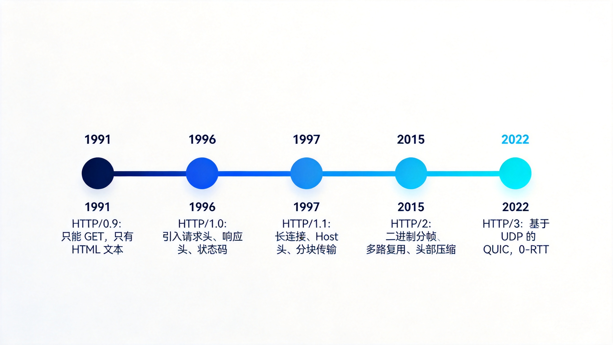
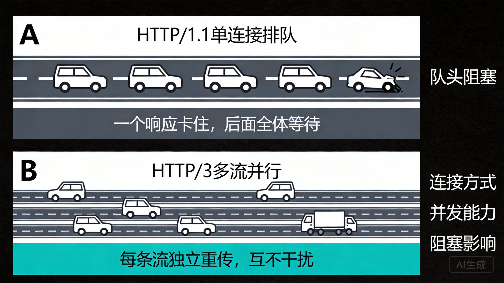
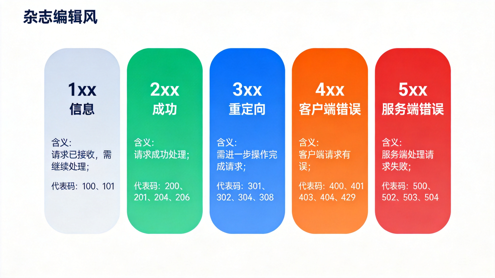
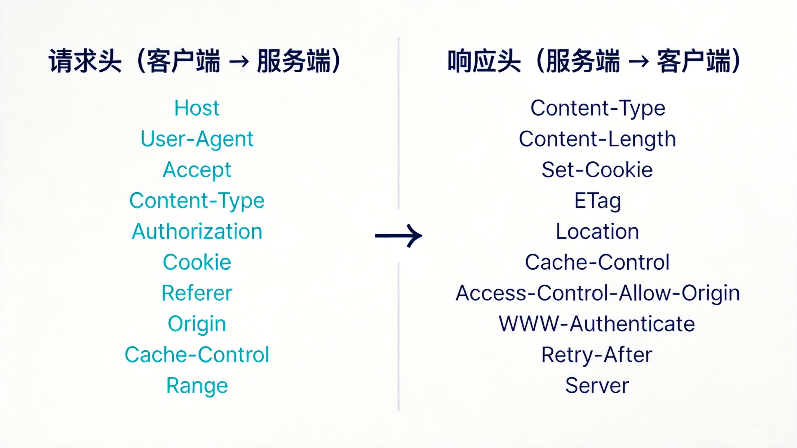
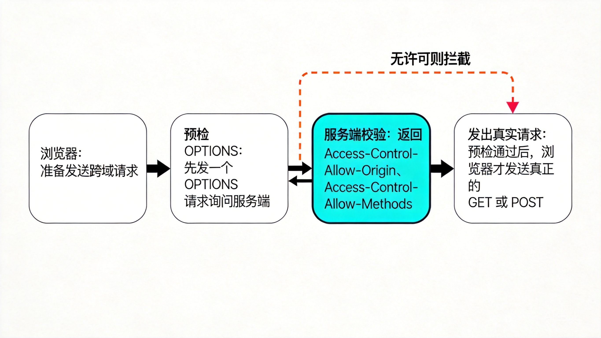

摘要：写了十几年接口，HTTP 却只停留在「会用」层面？这篇文章把 HTTP 五代演进、状态码体系、高频请求头与响应头一次梳理清楚。每一块都从「它解决什么问题」出发，读完你能独立解释版本更迭的动机、状态码的分类逻辑，以及常见 Header 在链路里到底干了什么。
你调过后端，写过接口，抓过包。
但让你从 HTTP/0.9 讲到 HTTP/3，把 301 和 302 的差别、401 和 403 的边界、502 和 504 的责任方讲清楚——很多人会卡壳。
这不是能力问题，是没人逼你系统捋一遍。
今天就捋一遍。目标很明确：下次再有人问「这个接口为什么返回 304」，你能脱口而出整条链路。
三件事：
不堆术语。每个概念都落到「它解决什么问题」。
HTTP 的本质一直没变：客户端发请求，服务端回响应，中间不保存状态。
变的是传输效率。记住一句话就够了：
每一代，都在解决「更快的连接 + 更小的开销 + 更强的复用」。

只有一个 GET，只能返回 HTML 文本，没有请求头、没有状态码、没有 Content-Type。
它的使命就是「把文档传过来」。极简到极致，也脆弱到极致。
引入了请求头、响应头、状态码、Content-Type。
问题是：每个请求都要新建一次 TCP 连接。三次握手的开销按请求次数翻倍。页面资源一多，慢到没法看。
这一代解决的是「连接复用」：
至今大部分流量还在 1.1 上跑。不是它最强，是它够用且兼容。
核心是二进制分帧 + 多路复用。
1.1 的管道化有个致命伤：响应必须按顺序回来，一个卡住全体等（队头阻塞）。2 通过多路复用让请求流并行，互不干扰。
另外：HPACK 头部压缩（大量重复的头不再重复传）、服务端推送。
注意：2 解决的是 HTTP 层的队头阻塞，TCP 层的还在。
直接抛弃 TCP，改用基于 UDP 的 QUIC。
两个大招：
TLS 握手也融进了 QUIC 里，安全不再是插件，是地基。

状态码由 RFC 规范定义，三位数字，按首位分类。
记忆法：首位看「谁的锅、什么阶段」。
| 类别 | 含义 | 你要做的判断 |
|---|---|---|
| 1xx | 信息，请求还在处理 | 继续/切换协议 |
| 2xx | 成功 | 都好，按 Content-Type 解析 |
| 3xx | 重定向/缓存 | 跳转去哪，或者走缓存 |
| 4xx | 客户端的锅 | 检查参数、认证、权限 |
| 5xx | 服务端的锅 | 看日志、找运维 |

2xx：200 OK、201 Created（创建成功，常见于 POST）、204 No Content（成功但无 body，常见于 DELETE/PUT）、206 Partial Content（断点续传/分片下载）。
3xx：301 永久重定向、302 临时重定向、307 临时且保持方法、308 永久且保持方法、304 Not Modified（缓存命中）。
4xx：400 参数错、401 未认证、403 无权限、404 不存在、405 方法不允许、408 请求超时、409 资源冲突、429 被限流。
5xx：500 内部错误、502 网关收到坏响应、503 服务不可用、504 网关等超时。
301 vs 302：301 是「永久搬家，浏览器可以把 POST 变 GET 且缓存结果」；302 是「临时，下次还来问」。SEO 和缓存行为差别巨大。
401 vs 403：401 是「没带证件」，响应头会带 WWW-Authenticate 告诉你怎么认证；403 是「带了证件也不让你进」。一个是认证问题，一个是授权问题。
502 vs 504：502 是网关收到了上游的坏响应（上游崩了或返回非法数据）；504 是网关等不到上游响应（上游太慢）。责任方不同：前者看上游服务，后者看性能或超时配置。
304 为什么没有 body：因为内容没变，服务端只是说「用你本地缓存」。304 属于缓存协商的成功分支，只带响应头不带内容。
HTTP/1.1 206 Partial Content
Content-Type: video/mp4
Content-Range: bytes 1000-9999/50000
Content-Length: 9000
Accept-Ranges: bytes206 + Content-Range，这就是断点续传的完整答案。
请求头解决的问题是：在无状态协议里，让服务端一次性知道「我是谁、我要什么、我有什么」。
| Header | 干什么 |
|---|---|
Host | 目标域名，虚拟主机路由的关键 |
User-Agent | 客户端身份：浏览器/爬虫/App 版本 |
Accept / Accept-Encoding / Accept-Language | 内容协商，我「能」接受什么 |
Content-Type | 请求体格式，如 application/json |
Content-Length | 请求体字节数，界定 body 边界 |
Authorization | 认证凭据：Bearer xxx / Basic xxx |
Cookie | 携带会话状态 |
Referer / Origin | 来源页 / 跨域来源 |
Cache-Control / If-None-Match / If-Modified-Since | 缓存协商 |
Range | 断点续传、分片下载 |
一个最小可用的请求长这样：
GET /api/user/1 HTTP/1.1
Host: api.example.com
Accept: application/json
Authorization: Bearer eyJhbGciOi...
If-None-Match: 「a1b2c3」响应头解决的是另一半问题：这个响应怎么解析、能不能缓存、下一步怎么办。
| Header | 干什么 |
|---|
Content-Type | 告诉客户端怎么解析响应体 |
|---|---|
Content-Length / Transfer-Encoding: chunked | 界定 body 边界 |
Content-Encoding | gzip / br 压缩算法 |
Set-Cookie | 下发会话 |
Cache-Control / ETag / Last-Modified / Expires | 缓存策略 |
Location | 配合 3xx，跳去哪 |
Access-Control-Allow-Origin | CORS 跨域许可 |
WWW-Authenticate | 配合 401，指明认证方式 |
Retry-After | 配合 429 / 503，多久后重试 |
Server / Date | 服务端信息、响应时间 |

缓存协商的完整一来一回：
# 请求
If-None-Match: 「a1b2c3」
# 响应
HTTP/1.1 304 Not Modified
ETag: 「a1b2c3」
Cache-Control: max-age=3600跨域失败时你会看到的：
Access-Control-Allow-Origin: https://trusted.com
Access-Control-Allow-Methods: GET, POST
Access-Control-Allow-Headers: AuthorizationQ：keep-alive 打开就行了吗？ 1.1 之后默认就是长连接，但服务端、网关（Nginx 的 keepalive_timeout）都可能提前断。排查慢请求先看连接复用率。
Q：什么时候用 204 而不是 200？ 成功但不需要返回内容时。DELETE 用 204 是行业惯例，能省掉一次 body 传输。
Q：Content-Length 和 Transfer-Encoding 会同时出现吗？ 不会。有 chunked 就不带 Content-Length，否则属于协议错误。
Q：为什么我的接口跨域报错，浏览器却没发 POST？ CORS 预检。非简单请求会先发一个 OPTIONS，服务端没回 Access-Control-Allow-* 就被浏览器拦下。

HTTP 的一切设计，都是在「无状态」这个前提下，把状态、缓存、性能、安全这几件事拆开来解决：
Cookie / Authorization。ETag / Cache-Control / 304。三十年过去，协议没变的是语义，变的是承载它的传输方式。
语义是 HTTP 的灵魂，传输是它的腿。下次抓包时，你看到的不再是一串字符，而是一套持续进化三十年的工程决策。
📌 延伸阅读
觉得有用？点个关注，持续获取优质内容。